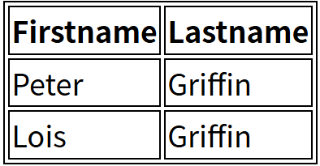

7.1
约 2812 个字 116 行代码 3 张图片 预计阅读时间 11 分钟
CSS 表格
使用 CSS 可以使 HTML 表格更美观
表格边框
指定CSS表格边框，使用border属性。
下面的例子指定了一个表格的Th和TD元素的黑色边框：
呈现效果如下：

在上面的例子中的表格有双边框。这是因为表和th/ td元素有独立的边界。
为了显示一个表的单个边框，使用 border-collapse属性。
折叠边框
border-collapse 属性设置表格的边框是否被折叠成一个单一的边框或隔开：
呈现效果如：

表格宽度和高度
Width和height属性定义表格的宽度和高度。
下面的例子是设置100％的宽度，50像素的th元素的高度的表格：
表格文字对齐
表格中的文本对齐和垂直对齐属性。
text-align属性设置水平对齐方式，向左，右，或中心：
垂直对齐属性设置垂直对齐，比如顶部，底部或中间：
表格填充
如需控制边框和表格内容之间的间距，应使用td和th元素的填充属性：
表格颜色
下面的例子指定边框的颜色，和th元素的文本和背景颜色：
CSS 盒子模型
所有HTML元素可以看作盒子，在CSS中，"box model"这一术语是用来设计和布局时使用。
CSS盒模型本质上是一个盒子，封装周围的HTML元素，它包括：边距，边框，填充，和实际内容。
盒模型允许我们在其它元素和周围元素边框之间的空间放置元素。
下面的图片说明了盒子模型(Box Model)：

不同部分的说明：
- Margin(外边距) - 清除边框外的区域，外边距是透明的。
- Border(边框) - 围绕在内边距和内容外的边框。
- Padding(内边距) - 清除内容周围的区域，内边距是透明的。
- Content(内容) - 盒子的内容，显示文本和图像。
为了正确设置元素在所有浏览器中的宽度和高度，你需要知道的盒模型是如何工作的。
元素的宽度和高度
当你指定一个 CSS 元素的宽度和高度属性时，你只是设置内容区域的宽度和高度。要知道，完整大小的元素，你还必须添加内边距，边框和外边距
下面的例子中的元素的总宽度为 450px：
CSS 边框
CSS 边框（Border）是用于定义元素边框样式的属性。
边框可以应用于任何 HTML 元素，用于增强视觉效果、分隔内容或突出显示元素。
CSS 边框属性主要包括边框宽度、边框样式、边框颜色以及简写属性。
边框属性
CSS边框属性允许你指定一个元素边框的样式和颜色。
边框样式
边框样式属性指定要显示什么样的边界。
border-style 属性用于指定要显示的边框类型。
允许的值如下：
- dotted：定义点状边框。
- dashed：定义虚线边框。
- solid：定义实线边框。
- double：定义双线边框。
- groove：定义三维沟槽边框。效果取决于 border-color 的值。
- ridge：定义三维脊状边框。效果取决于 border-color 的值。
- inset：定义三维嵌入边框。效果取决于 border-color 的值。
- outset：定义三维突出边框。效果取决于 border-color 的值。
- none：定义无边框。
- hidden：定义隐藏边框。
效果可以直接访问菜鸟教程在线编辑器来查看
边框宽度
您可以通过 border-width 属性为边框指定宽度。
为边框指定宽度有两种方法：可以指定长度值，比如 2px 或 0.1em(单位为 px, pt, cm, em 等)，或者使用 3 个关键字之一，它们分别是 thick 、medium（默认值） 和 thin。
注意： CSS 没有定义 3 个关键字的具体宽度，所以一个用户可能把 thick 、medium 和 thin 分别设置为等于 5px、3px 和 2px，而另一个用户则分别设置为 3px、2px 和 1px。
注意: "border-width" 属性 如果单独使用则不起作用。要先使用 "border-style" 属性来设置边框。
边框颜色
border-color属性用于设置边框的颜色。可以设置的颜色：
- name - 指定颜色的名称，如 "red"
- RGB - 指定 RGB 值, 如 "rgb(255,0,0)"
- Hex - 指定16进制值, 如 "#ff0000"
您还可以设置边框的颜色为"transparent"。
注意： border-color单独使用是不起作用的，必须得先使用border-style来设置边框样式。
单独设置各边
在CSS中，可以指定不同的侧面不同的边框
p
{
border-top-style:dotted;
border-right-style:solid;
border-bottom-style:dotted;
border-left-style:solid;
}
上面的例子也可以设置一个单一属性：
border-style属性可以有1-4个值：
-
border-style:dotted solid double dashed;
-
上边框是 dotted
- 右边框是 solid
- 底边框是 double
- 左边框是 dashed
-
border-style:dotted solid double;
-
上边框是 dotted
- 左、右边框是 solid
- 底边框是 double
-
border-style:dotted solid;
-
上、底边框是 dotted
- 右、左边框是 solid
-
border-style:dotted;
-
四面边框是 dotted
上面的例子用了border-style。然而，它也可以和border-width 、 border-color一起使用。
简写属性
上面的例子用了很多属性来设置边框。
你也可以在一个属性中设置边框。
你可以在"border"属性中设置：
- border-width
- border-style (required)
- border-color
CSS 轮廓（outline）
轮廓（outline）是绘制于元素周围的一条线，位于边框边缘的外围，可起到突出元素的作用。
轮廓（outline）属性指定元素轮廓的样式、颜色和宽度。
没什么好看的CSS 轮廓（outline）属性 | 菜鸟教程
CSS margin(外边距)
margin
margin 清除周围的（外边框）元素区域。margin 没有背景颜色，是完全透明的。
margin 可以单独改变元素的上，下，左，右边距，也可以一次改变所有的属性。
没什么好看的CSS margin(外边距) | 菜鸟教程
CSS padding（填充）
padding（填充）
当元素的 padding（填充）内边距被清除时，所释放的区域将会受到元素背景颜色的填充。
单独使用 padding 属性可以改变上下左右的填充。
CSS 分组 和 嵌套 选择器
分组选择器
在样式表中有很多具有相同样式的元素。
为了尽量减少代码，你可以使用分组选择器。
每个选择器用逗号分隔。
在下面的例子中，我们对以上代码使用分组选择器：
嵌套选择器
它可能适用于选择器内部的选择器的样式。
在下面的例子设置了四个样式：
- p{ }: 为所有 p 元素指定一个样式。
- .marked{ }: 为所有 class="marked" 的元素指定一个样式。
- .marked p{ }: 为所有 class="marked" 元素内的 p 元素指定一个样式。
- p.marked{ }: 为所有 class="marked" 的 p 元素指定一个样式。
实现去看这个菜鸟教程在线编辑器
CSS Display(显示) 与 Visibility（可见性）
display属性设置一个元素应如何显示，visibility属性指定一个元素应可见还是隐藏。
隐藏元素 - display:none或visibility:hidden
隐藏一个元素可以通过把display属性设置为"none"，或把visibility属性设置为"hidden"。但是请注意，这两种方法会产生不同的结果。
visibility:hidden可以隐藏某个元素，但隐藏的元素仍需占用与未隐藏之前一样的空间。也就是说，该元素虽然被隐藏了，但仍然会影响布局。
display:none可以隐藏某个元素，且隐藏的元素不会占用任何空间。也就是说，该元素不但被隐藏了，而且该元素原本占用的空间也会从页面布局中消失。
CSS Display - 块和内联元素
块元素是一个元素，占用了全部宽度，在前后都是换行符。
块元素的例子：
- \<h1>
- \<p>
- \<div>
内联元素只需要必要的宽度，不强制换行。
内联元素的例子：
- \<span>
- \<a>
如何改变一个元素显示
可以更改内联元素和块元素，反之亦然，可以使页面看起来是以一种特定的方式组合，并仍然遵循web标准。
下面的示例把列表项显示为内联元素：
下面的示例把span元素作为块元素：
注意： 变更元素的显示类型看该元素是如何显示，它是什么样的元素。例如：一个内联元素设置为display:block是不允许有它内部的嵌套块元素。
CSS Position(定位)
position 属性指定了元素的定位类型。
position 属性的五个值：
元素可以使用的顶部，底部，左侧和右侧属性定位。然而，这些属性无法工作，除非事先设定position属性。他们也有不同的工作方式，这取决于定位方法。
static 定位
HTML 元素的默认值，即没有定位，遵循正常的文档流对象。
静态定位的元素不会受到 top, bottom, left, right影响。
fixed 定位
元素的位置相对于浏览器窗口是固定位置。
即使窗口是滚动的它也不会移动：
注意： Fixed 定位在 IE7 和 IE8 下需要描述 !DOCTYPE 才能支持。
Fixed定位使元素的位置与文档流无关，因此不占据空间。
Fixed定位的元素和其他元素重叠。
relative 定位
相对定位元素的定位是相对其正常位置。
移动相对定位元素，但它原本所占的空间不会改变。
相对定位元素经常被用来作为绝对定位元素的容器块。
absolute 定位
绝对定位的元素的位置相对于最近的已定位父元素，如果元素没有已定位的父元素，那么它的位置相对于\<html>:
absolute 定位使元素的位置与文档流无关，因此不占据空间。
absolute 定位的元素和其他元素重叠。
sticky 定位
sticky 英文字面意思是粘，粘贴，所以可以把它称之为粘性定位。
position: sticky; 基于用户的滚动位置来定位。
粘性定位的元素是依赖于用户的滚动，在 position:relative 与 position:fixed 定位之间切换。
它的行为就像 position:relative; 而当页面滚动超出目标区域时，它的表现就像 position:fixed; ，它会固定在目标位置。
元素定位表现为在跨越特定阈值前为相对定位，之后为固定定位。
这个特定阈值指的是 top, right, bottom 或 left 之一，换言之，指定 top, right, bottom 或 left 四个阈值其中之一，才可使粘性定位生效。否则其行为与相对定位相同。
div.sticky {
position: -webkit-sticky; /* Safari */
position: sticky;
top: 0;
background-color: green;
border: 2px solid #4CAF50;
}
重叠的元素
元素的定位与文档流无关，所以它们可以覆盖页面上的其它元素
z-index属性指定了一个元素的堆叠顺序（哪个元素应该放在前面，或后面）
一个元素可以有正数或负数的堆叠顺序：
具有更高堆叠顺序的元素总是在较低的堆叠顺序元素的前面。
注意： 如果两个定位元素重叠，没有指定z - index，最后定位在HTML代码中的元素将被显示在最前面。